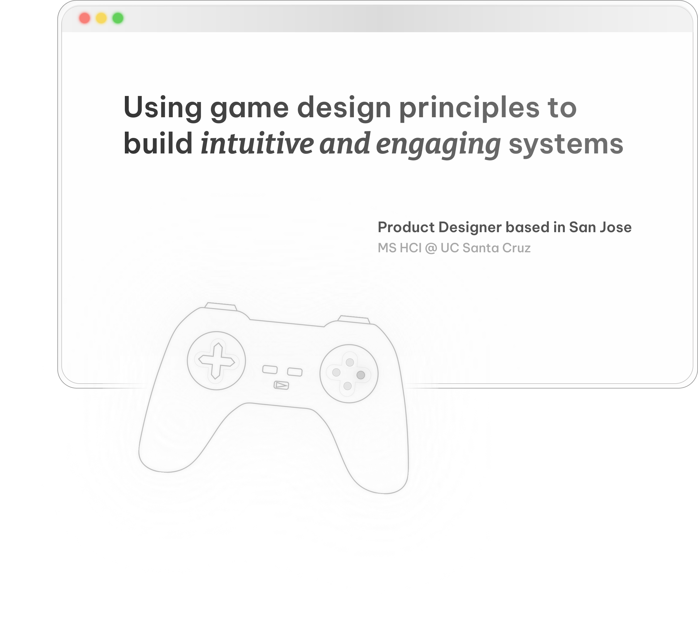

Genesis • Founding Designer • 0 to 1 Product
Connecting individuals to local moving services through a centralized platform
Product Designer

Connecting individuals to local moving services through a centralized platform
I’m Isha, a product designer with a background in game design and a focus on accessible, thoughtful, and engaging digital experiences.